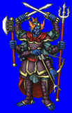
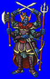
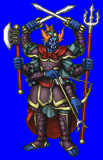
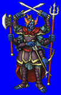

Height: ??? Weight: ???
Habitat: Sealed underground Origin: India
Meaning: "asu" means "life force", "sura" means "god"
A name for a class of divine being, loosely translated as "demon". Asura existed in many pantheons, though their influence was felt most strongly in the pantheons of Indian Vedic culture and ancient Persia. Although Asura were generally considered the enemy of the Deva, the divine family, sometimes they enlisted the aid of the Asura to fulfill certain tasks. With three heads and six arms, Asura protects its followers from harm.